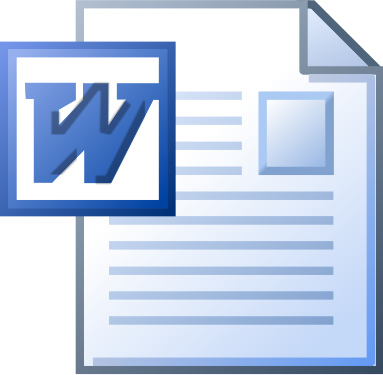

ATM is an acronym for Applied Technology Magnet, a three year program at Bancroft Middle School. In ATM, the students learn different programs, different techniques, and how to use the computer.
During 6th grade ATM, we learned about typing, Microsoft Programs, and how to use a computer
During 7th grade ATM, we learned about SketchUp, FloorPlanner, Coding, Photography, Illustrator, and Photoshop

During the short time I've been in the ATM program in 8th grade, we learned about making websites, coding, and visual studio code
| 6th Grade | 7th Grade | 8th Grade |
|---|---|---|
| Microsoft Word: We made letters and newsletters. | SketchUp: We learned how to make 3D models of things such as houses and furniture. | Coding: We learned how to use HTML and CSS. We also learned the basics of coding through Khan Academny. |
| Microsoft Excel: We learned tricks and shortcuts in the program, and we learned how to make graphs, tables, and spreadsheets. | FloorPlanner: We learned how to make replicas of classrooms at our school | Making Websites: While using HTML and CSS, we can make websites and eventually make the websites public. |
| Microsoft PowerPoint: We learned how to make slideshows and how to make annimations. | Coding: We learned some basic of coding using a Karel Program where we had to command a dog to do certain actions using code. | Visual Studio Code: We used our knowledge of HTML and CSS to make a website from scratch in this program, the websites weren't public though. |
| Typing: During typing, we learned and memorized the placements of the keys on the keyboard, and would try to get al least 30 words per minute. | Photography: Although not a long unit, we learned how to make a photo look good, and how professionals take their photos. | TBD |
| Internet Safety: We learned how to be safe on the internet. We made posters, had discussions, and watched videos about this topic. | Illustrator: We learned how to use an Adobe program called Illustrator. We made logos, bussiness cards, and vector graphics. | TBD |
| How to use a computer: We learned shortcuts, tricks, and explinations to differnt things about a computer. | Photoshop: I learned how to edit photos and make them completely different from what they were before. | TBD |
Overall, I think that the ATM program was a great class that I had in middle school. It taught me a lot about computers and differnt programs that most people in my family didn't know about. Technology classes can be very useful to students, and they should be offered at most schools.